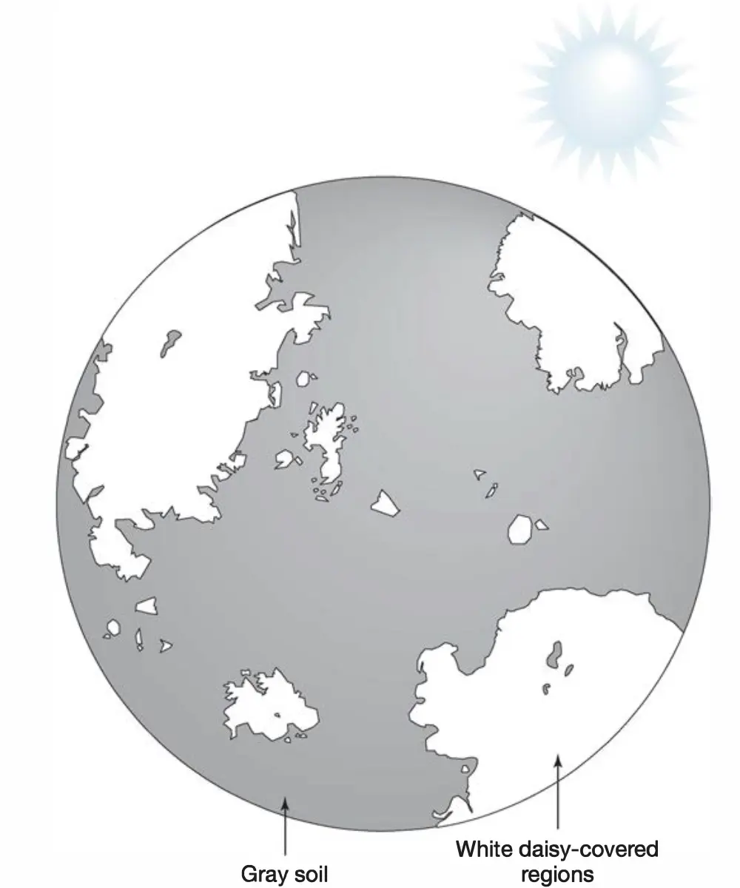
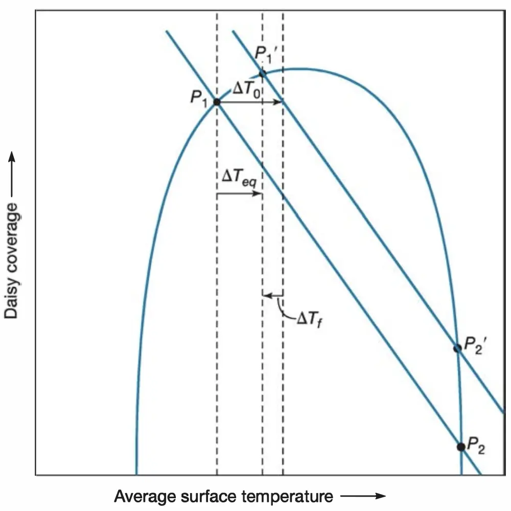

Introduction and Applications
Nuclear fusion in the sun causes its core to contract and heat up slightly as its helium content increases. As the result, energy production from the sun's core increases, energy emitted at the surface of the sun increases, and the sun appears brighter. In fact, when the Sun first formed 4.6 billion years ago, it should have been about 30% less luminous than it is today. This means that if all other factors had remained constant, the early Earth should have been colder than it is today, being ice-covered prior to 2 billion years ago.
However, this isn't the case. Sedimentary rock evidences prove that liquid water has existed on Earth's surface for at least the last 3.8 billion years. This apparent discrepancy is called the "faint young Sun paradox." The most likely explanation is that the level of greenhouse gases in Earth's primitive atmosphere was significantly higher; as solar luminosity gradually increases, the level of greenhouse gases gradually decreases, keeping the temperature of the earth in a rough equilibrium.
Why should this have been true? What caused the change in greenhouse gas concentration? The Daisyworld is a hypothetical model to show how self-regulation and interaction between systems automatically created such long-term climate equilibrium on a planet, and how this equilibrium might eventually shatter when the external changes become too significant.
White daisies grow on the dark soil of Daisyworld. As we all know, brighter surfaces reflect more heat since they have a higher albedo (the proportion of the incident light or radiation that is reflected by a surface), and vice versa; if there are more daisies on the surface of Daisyworld, the temperature in Daisyworld will be lower.
The growth of daisies, however, is also controlled by temperature, like any other regular organism. There is an optimum temperature in which daisies grow at the fastest rate; as temperature moves away from the optimum temperature, the growth rate of daisies decrease, until at some point the planet is too cold or too hot to sustain any extra daisies.
The system seems quite fragile to disturbances at first glance: any significant change in daisy coverage would result in a significant change in temperature, and any significant change in temperature would result in a significant change in daisy coverage. In reality, these factors can manage to work together to keep the Daisyworld in an equilibrium for a relatively long period of time, just like how Earth managed to regulate itself for more than 4 billion years.
However, we will eventually observe the fall of the equilibrium as the forcing (persistent disturbance of a system), or the change in solar luminosity in this case, becomes too much. This outlines the potential threat faced by the Earth in the far future.
Simulation
Variables
| Variable | Default | Unit | Meaning |
|---|---|---|---|
| \(T\) maxt |
100 | Billion Years | Maximum time of the simulation. A higher value allows you to observe changes in Daisyworld for a longer time period. |
| \(s\) side |
360 | Pixels | Sidelength of the planet of Daisyworld. A higher value means slower simulation but relatively more precise and reliable results. |
| \(\theta_O\) optm |
290 | Kelvins | Optimum temperature of daisies, or the temperature at which the speed of daisy growth is at its fastest possible. |
| \(\theta_\max - \theta_\min\) rnge |
20 | Kelvins | Range of acceptable temperature of daisies, or the difference between maximum and minimum temperature that allows the survival of any daisies. |
| \(a_d\) albd |
70 | % | Albedo of the daisies, or percentage of incoming solar radiation reflected back to the universe by the white daisies. |
| \(a_g\) albg |
30 | % | Albedo of the ground, or percentage of incoming solar radiation reflected back to the universe by the gray soil. |
| \(l_0\) lum0 |
335 | Kelvins | Initial solar luminosity, measured as the equivalent temperature the planet would have if it absorbed all the incoming radiation. |
| \(\Delta l\) dlum |
9 | % per Billion Year | Rate of increase of solar luminosity. A higher value speeds the simulation up. |
| \(B\) brte |
10 | % | Birth rate of daisies. If a pixel meets the requirement to become a new daisy, this is the chance that the daisy will spread to that pixel. A higher value means that daisies are more sensitive to temperature changes, which can also mean more irregular fluctuations in daisy coverage. |
| \(D\) drte |
10 | % | Death rate of daisies. If a pixel meets the requirement to become a pixel of gray soil again, this is the chance that the daisy will actually die. A higher value means that daisies are more sensitive to temperature changes, which can also mean more irregular fluctuations in daisy coverage. |
| \(R\) rrte |
5 | % | Random generation rate of daisies. If a pixel meets the requirement to grow a new daisy but does not have neighboring daisies, this is the chance that a daisy will randomly spawn. A higher value means that daisies are less sensitive to density. |
| \(t\) | (varies) | 50 Million Years | Round of simulation |
| \(\theta_t\) | Kelvins | Temperature in Daisyworld in round \(t\) | |
| \(l_t\) | Kelvins | Kelvin equivalent of solar luminosity in round \(t\) | |
| \(d_t\) | % | Daisy coverage in round \(t\) | |
| \(a_t\) | % | Average albedo in round \(t\) | |
| \(G_\theta\) | % | Growth rate under temperature \(\theta\) | |
| \(C_{B, t}\) | % | Chance of a daisy to grow through spreading in round \(t\) | |
| \(C_{R, t}\) | % | Chance of a daisy to grow through random generation in round \(t\) | |
| \(C_{D, t}\) | % | Chance of a daisy to die in round \(t\) |
The table offers an overview of key variables that determine the outcomes of the simulation. Some can be adjusted through the "Settings" interface, allowing you to explore different outcomes of Daisyworld under different conditions.
Functions and Graphs
The rate of growth of daisies at a time is determined by the temperature. Two functions illustrate the relations.
The control of temperature on the growth of daisies is roughly a quadratic relation. The vertex shows the optimum temperature and the respective growth rate, and the x-intercepts show the points where the planet is too cold or too hot to sustain any extra daisies.
The control of daisy coverage on temperature, meanwhile, is linear. The higher the daisy coverage, the higher the average albedo, the greater the percentage of solar radiation reflected from the surface, the lower the temperature of the planet.
If we graph the inverse of the linear function along with the quadratic function, we can observe two intersections, \(P_1\) and \(P_2\). These points of intersection are special because they represent the only states of the system that simultaneously fall on the curves showing both the effect that white-daisy coverage has on surface temperature and the effect that surface temperature has on white-daisy coverage. We can say that the system is in equilibrium. If the system is already in one of these states, it will remain there unless something disturbs it.
Unfortunately, disturbances do occur in the system: the increasing solar luminosity, which should result in an increase surface temperatures in Daisyworld, or \(\Delta T_0\) to the right. Suppose we are at \(P_1\). Daisyworld responds by increasing the daisy coverage to \(P_1'\); the increase in daisy coverage causes a slight decrease in the temperature, \(\Delta T_f\), due to the increased overall albedo of the planet. The overall temperature increase is limited to \(\Delta T_{eq}\) instead. Daisyworld is able to stabalize the increase and help the system remain in the equilibrium. Since temperature increase encourages daisy growth and daisy growth inhibits temperature increase, we can say that the system controls itself through a negative feedback loop. The equilibrium is thus a stable equilibrium, or one that the system will still return to after being disturbed.
\(P_2\) is another case. Here, temperature increase inhibits daisy growth since the real temperature is higher than the optimum temperature. Daisy growth still inhibits temperature increase, so there is a positive feedback loop amplifying the temperature increase. \(P_2'\) thus represents an unstable equilibrium; the system will remain in its current state if no disturbances are present, but any small disturbance will carry the system to another different state.
Modelling
The daisy coverage can thus be simulated based on the variables and rules defined above. The program loops through consecutive rounds of 50 million years, \(t\), until \(T\) is reached, continuously calculating and recording the daisy coverage and temperature.
In each round, we first calculate the temperature \(\theta\) as what remains of the current solar luminosity, \(l_t\), after some radiation is reflected, the amount of which depends on the current average albedo, \(a_t\).
\[\theta_t = l_t (100\% - a_t)\]
The current solar luminosity measured in the equivalent temperature of the planet, \(l_t\), can be calculated based on the last recorded luminosity, \(l_{t-1}\), and \(\Delta l\). The current average albedo of the planet, \(a_t\), based on the daisy coverage in the last round \(d_{t-1}\), the albedo of the daisies \(a_d\), and the albedo of the ground \(a_g\).
\[l_t = l_{t-1} \Delta l\] \[a_t = a_d d_{t-1} + a_g (100\% - d_{t-1})\]
We then iterate through each grid twice, once to determine whether a new daisy will grow in an empty pixel, next to determine whether a grown daisy will die and get removed. The growth rate of daisies, which is determined by temperature through the quadratic optimum temperature curve, controls daisy generation as a percentage of the maximum rate at the optimum temperature. Simplifying the quadratic function, we can observe how the raw growth rate \(G\) at temperature \(\theta\) can be obtained from the values of \(\theta_O\) and \(\theta_\max\) or \(\theta_\min\) as:
\[G_\theta = 1 - \frac{(\theta - \theta_O)^2}{(\theta_\max - \theta_O)^2}\]
A daisy might spread to a nearby empty pixel from an existing daisy. For each of the four grids near an existing daisy, the chance of a daisy being planted in the respective grid through spreading, \(C_B\), is one-fourth of the product of the growth rate \(G\), the universal birth rate \(B\) (defined at the start of the simulation), and a representation of how the population growth might be regulated by density dependent factors.
\[C_{B, t} = \frac{1}{4} B G_{\theta_t} (1 - d_{t-1})\]
A daisy might also randomly generate out of nowhere if the temperature condition is acceptable; this is especially important e.g. for the introduction of the first daisies to the planet. The chance of a daisy being planted in the respective grid randomly, \(C_R\), is the product of the growth rate \(G\), the universal random generation rate \(R\) (defined at the start of the simulation), and a representation of how the population growth might be regulated by density dependent factors.
\[C_{R, t} = R G_{\theta_t} (1 - d_{t-1})\]
Lastly, daisies die when they have lived for long enough. A daisy is more likely to die when the growth rate is low, which means the environment is less optimal to sustain this much daisies. The chance of a daisy to disappear into nowhere, \(C_D\), is the product of the difference between \(100\%\) and the growth rate \(G\) and the universal death rate \(D\) (defined at the start of the simulation). Notice that when \(G\) goes below zero, or when the temperature can no longer sustain the growth of daisies, all daisies quickly perish.
\[C_{D, t} = D (1 - G_{\theta_t})\]
We randomly simulate the process of growth and death of daisies to obtain the results below.
Results
Without the Daisies
If daisies do not exist in the world, daisy coverage \(d\) remains in a constant zero, the average albedo of the planet \(a\) remains the same as the albedo of the ground \(a_g\), and the temperature of Daisyworld will always be proportional to the solar luminosity, which is increasing exponentially through time.
This is exactly what happens when the temperature of Daisyworld was lower than the minimum temperature that can support daisy growth. The lack of daisies allowed the planet to heat up continuously without the feedback loop regulating the change.
Introduction of the Equilibrium
Everything changes when the first daisy started to bloom when the minimum temperature to sustain daisy growth is reached, or when the two graphs finally meet for the first time at \((\theta_\min, 0)\).
The temperature increase is immediately surpressed by the increase in albedoes caused by the spawn of new daisies. It becomes clear that
Unfortunately, this page is still not fully finished. Ms. Schenk, if you see this line, please contact me so that I can finish this page as soon as possible, hopefully within a day.
Fall of the Equilibrium
Help
Running the Program for the First Time
If you do not know how to run the program, please follow the following steps, or perhaps ask Google or ChatGPT.
- Install Python from the official website or Homebrew.
- Install the libraries with Terminal commands, including:
- Tkinter (if Python is installed with Homebrew)
- Python Image Library:
pip3 install Pillow - OpenCV:
pip3 install opencv-python - NumPy:
pip3 install numpy - Matplotlib:
pip3 install matplotlib
- Run the Terminal command to start the program:
python3 [drag daisyworld.py into the window]
Interface
Related Knowledge
Environmental Systems and Societies
Geography
Biology
References
- Kump, L. R., Kasting, J. F., & Crane, R. G. (2010). Daisyworld. In The Earth System (3rd ed., pp. 29–43). Pearson Prentice Hall.